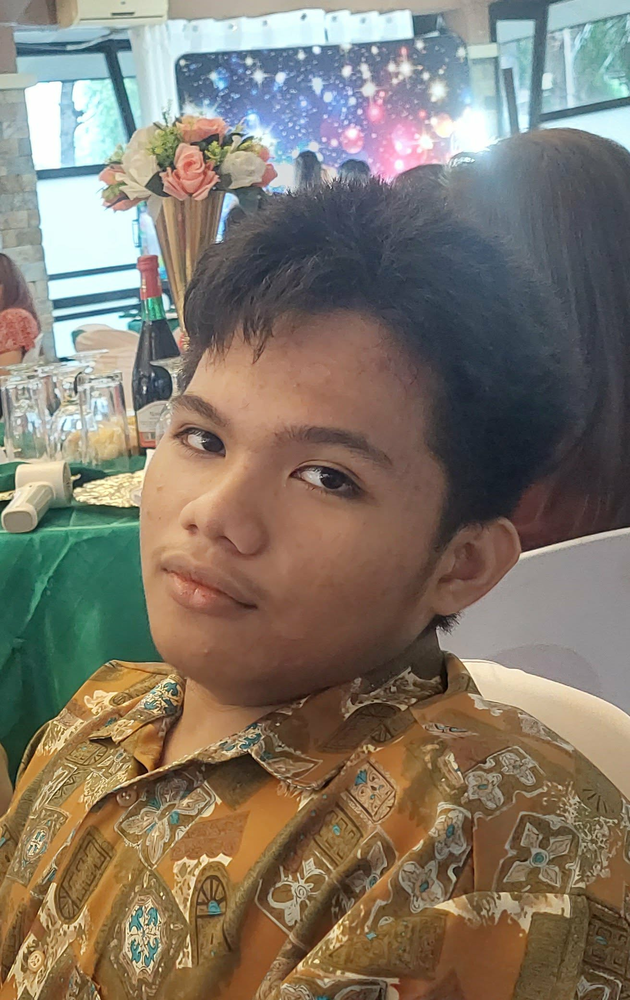
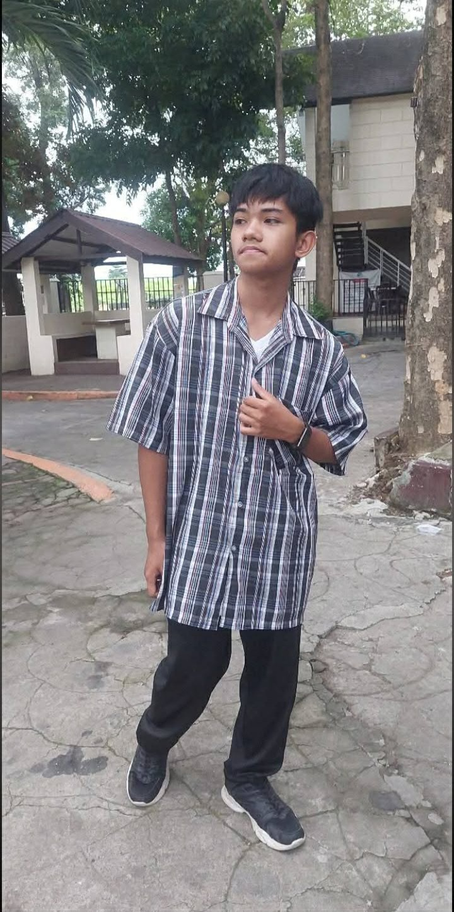

The people who make every season brighter
My Family

Reynaldino S. Bindoy (Me)
This is me! I am Reynaldino S. Bindoy. I grew up here in Manila. I was born on July 13, 2009 and was raised with great care from my parents.
I am a proud filipino, born and raised in the philippines.
Ever since I was a kid, I have always been interested in playing games. Some for their story, for their mystery, or just to have fun with friends.
In the future, I hope to have a successful career in the I.T. industry. Earning enough money to support my family. And repay them back for allowing me to be able to attend school and be educated.

Rendale Kevin S. Bindoy
This is my little brother. Rendale Kevin S. Bindoy. I call him "K" for short. He was also raised here in Manila, born on July 29, 2011.
He also likes to play games, specifically tactical shooter war games. Where 2 sides of the battlefield fought to secure and conquer and.
He is interested in business, and hope someday to establish a coffee shop, or a company like Starbucks.
Afterall, me, my father, and my brother likes drinking coffee. As for his hobby, he likes playing the guitar and playing the sport boxing with his friends.

Mary Ann S. Bindoy
The precious jewel of pur family. My mother, Mary Ann S. Bindoy was born from the province of Bulacan on May 17, 1976. She is a caring mother who love her children very much.
She thought us about the world and how it is to take responsibility for your own actions. To be kind to others and build healthy relationships.
My mom is the type of person that likes to go swimming. Whether its in the beach, river, or in the swimming pool she can keep going for hours on end. She also likes watching K-dramas, often watching multiple series as a passing time when she is doing house work. A mother that I am proud to have

Reynaldo S. Bindoy
This is my father, if I can describe him with 1 word, it will be hardworking. His name is Reynaldo S. Bindoy, born on January 30, 1984 Manila Philippines.
He is the guardian of our family that kept us safe. Although not perfect, he is the best father I could ever have. He support me in my dreams, allowed to be able to go to school. I am his son and I am thankful to god for that.
Like me, he also likes spicy foods and street foods. He likes watching action movies, martial arts featuring bruce lee, jackie chan. And old classic filipino movies lead by the legendary duo enemies fernando poe jr and Paquito Diaz.